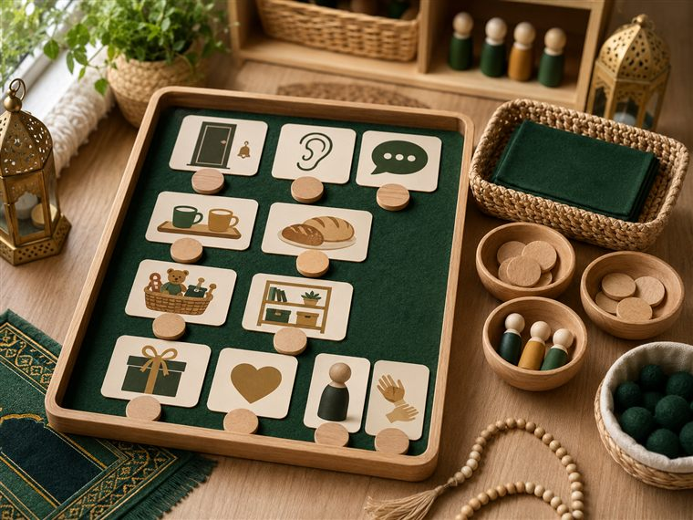
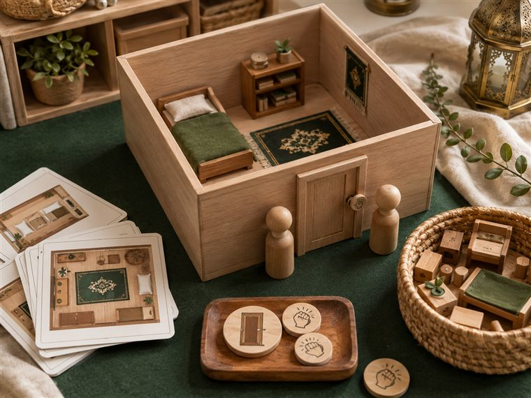
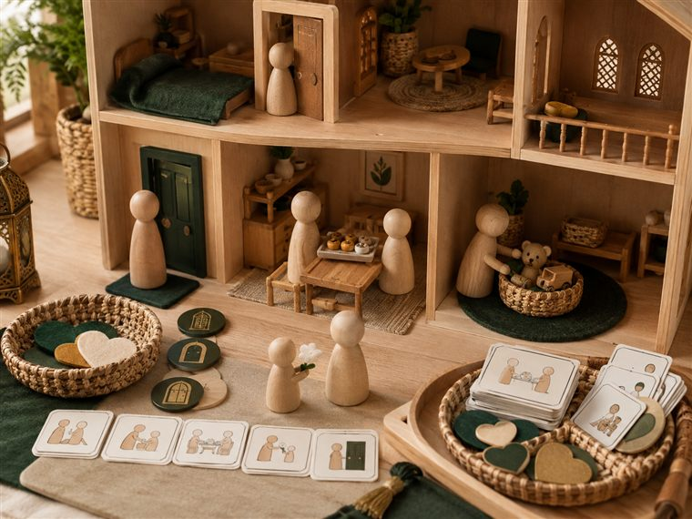

اليوم الثاني · أتعاملُ بأدبٍ مع أهلي وأستأذن
مساحاتُ لعبٍ حرّ. لكثرة الأعداد نفتح ٤ أركانٍ متوازية بمراكز مختلفة؛ وزّعي المجموعات عليها وتتناوب بينها في الفترتين حتى لا تتكدّس. كل ركنٍ لمسةٌ تكاملية مع اللعب تجمع دروس اليوم: آداب التعامل مع أفراد العائلة (علّمني) · الاستئذان (أدب) · اللهُ يراني والملائكةُ تكتبُ عملي (كتابي · الإنفطار) — تذكيرًا لا تجسيدًا لهيبة الغيب. (دُمى بلا ملامح. أعمار ٥–٦: بناء/تلوين جاهز/قصّ ولصق/ترتيب/اختيار بطاقات/أدوار/حركة — بلا كتابةٍ أو رسمٍ حرّ.)

🧩 أدرك · «آدابُ التعامل — مطابقةٌ وفرز»
يطابق الطفل بطاقةَ الأدب بموقفها مع أفراد العائلة (السلام · الكلمة الطيبة · الاستئذان · المساعدة)، ويفرز المواقفَ الحسنة ويردّدها لعبًا بلا كتابة.
🧰 الأدوات: بطاقاتُ مواقفَ مصوّرة (بلا وجوه) · بطاقاتُ آداب للمطابقة · لوحةُ تصنيفٍ مقوّاة · صناديقُ فرز.
📋 دور المعلمة: تعرض الموقف وتسأل «ما الأدب هنا؟»؛ تعين على المطابقة؛ تربط الأدبَ بمحبّة الله ورؤيته لنا.
🌱 المعنى المركزي: لكلِّ موقفٍ أدبٌ مع أهلي أعرفُه وأعملُه.
📜 قوانين الركن: أبقى في ركني حتى ينتهي الوقت · أحافظ على أدواته · أتشارك وأنتظر دوري · أُعيد الأدوات مرتّبة.

🧱 البناء · «أبني غرفتي وأستأذنُ عند بابها» (لا تلوين)
يبني الأطفال غرفَ البيت وبابًا بالمكعبات، ثم يمثّلون الاستئذانَ حركيًّا: يطرقُ ثم يدخلُ بإذن، ويضعون بطاقاتِ الأدب الجاهزة على الغرف.
🧰 الأدوات: مكعباتٌ خشبية · بابٌ لعبيٌّ مبنيٌّ · بطاقاتُ آدابٍ جاهزة تُوضع على البناء (بلا أقلام تلوين).
📋 دور المعلمة: تُدير أدوار البناء بالتناوب؛ تُنمذِج الطرقَ والاستئذان قبل الدخول؛ تذكّر شفهيًّا باطّلاع الله وكتابة الملائكة (تذكيرًا لا تجسيدًا).
🌱 المعنى المركزي: لا أدخلُ غرفةَ أحدٍ إلا بإذن؛ الاستئذانُ أدبٌ يحبّه الله.
📜 قوانين الركن: أبقى في ركني حتى ينتهي الوقت · أحافظ على أدواته · أتشارك وأنتظر دوري · أُعيد الأدوات مرتّبة.
🎨 فنوني · «ألوّنُ كلمتي الطيّبة وألصقها»
يلوّن الطفل بطاقاتِ الكلمة الطيّبة والأدب الجاهزة (السلام · شكرًا · من فضلك · أعتذر) ويقصّها ويلصقها في لوحةٍ جماعية، ويردّدها مع أهله لعبًا.
🧰 الأدوات: بطاقاتُ الأقوال الطيّبة الجاهزة للتلوين · أقلام تلوين · مقصٌّ آمن · لاصق · لوحةٌ جماعية.
📋 دور المعلمة: تنطق الكلمة الطيّبة وتربطها بموقفها؛ تعين على القصّ واللصق؛ تحتفي بالمشاركة لا بالإتقان.
🌱 المعنى المركزي: الكلمةُ الطيّبةُ صدقةٌ أُهديها لأهلي.
📜 قوانين الركن: أبقى في ركني حتى ينتهي الوقت · أحافظ على أدواته · أتشارك وأنتظر دوري · أُعيد الأدوات مرتّبة.

🏠 المسكن · «أتعاملُ بأدبٍ مع أهلي»
يمثّل الأطفال بدُمى بلا ملامح مواقفَ الأدب في البيت: السلام عند الدخول · مساعدة الأم · الكلمة الطيّبة للأخ · الاستئذان؛ ويتبادلون الأدوار.
🧰 الأدوات: دُمى بيتٍ بلا وجوه · أدواتُ بيتٍ خشبية · بابٌ لعبيٌّ · بطاقاتُ أدوارٍ ومواقفَ جاهزة.
📋 دور المعلمة: تُوزّع الأدوار لعبًا وتُنمذِج الموقفَ الأدبيّ؛ تُثني على اللين والاحترام؛ تذكّر برؤية الله لأدبنا مع أهلنا.
🌱 المعنى المركزي: أُعامِلُ أهلي باللين والأدب فيحبُّني اللهُ ويحبُّني أهلي.
📜 قوانين الركن: أبقى في ركني حتى ينتهي الوقت · أحافظ على أدواته · أتشارك وأنتظر دوري · أُعيد الأدوات مرتّبة.